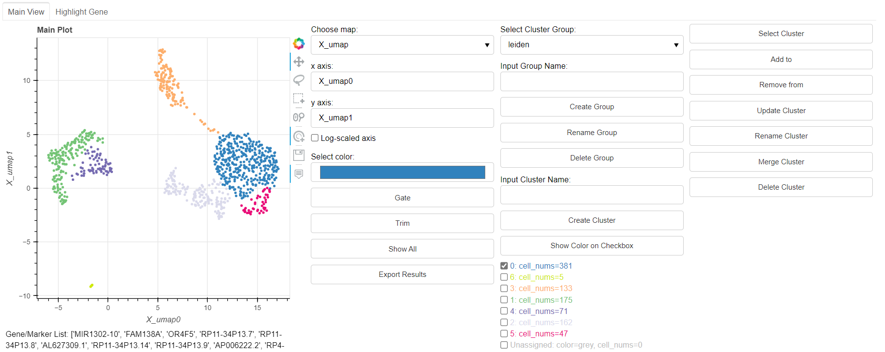
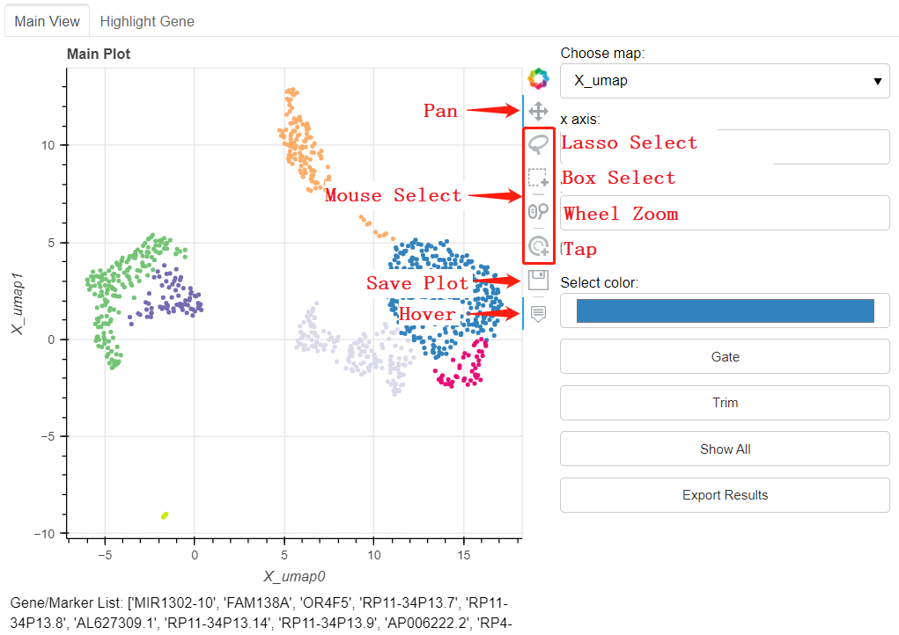
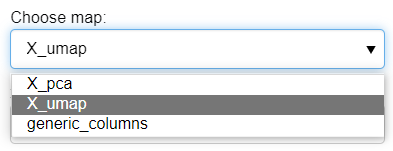
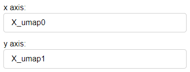
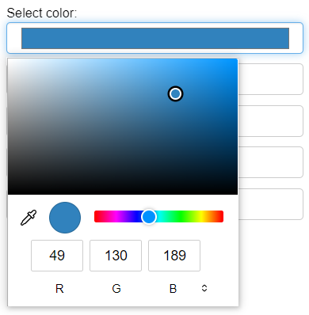
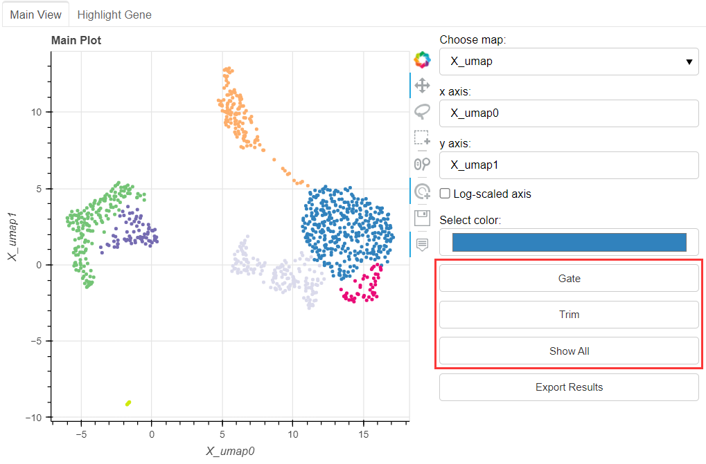
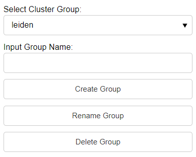
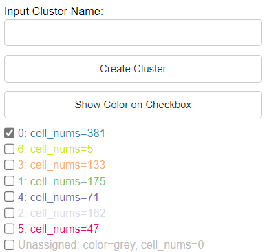
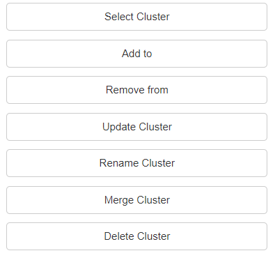
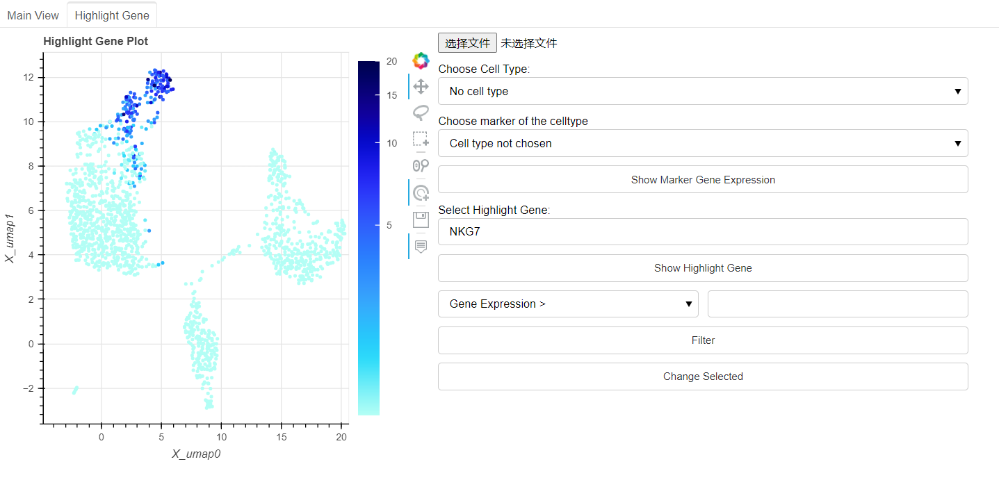

Navigation
Overview
This is an example of PBMC_3k scRNA-seq data labeled by leiden and showed with umap.
{kind=link}
Toolbox
The Toolbox is just on the right of main plot.
{kind=link}
Map Editor
Click to choose the map.
{kind=link}
The option of map is decided by the existed view. If there is not existed view of data, the plot map will be constructed by the feature, which is named by generic_columns.
Then input the x and y axis.
{kind=link}
Plot Editor
Check Log-scaled axis if log scaled feature is expected to show.
{kind=link}
Select current color with color selection button.
{kind=link}
Gate: click Gate button, then only the selected dots will show in the plot. Trim: click Trim button, then selected dots will be removed in the plot. Show All: click Show All button, then all the dots will show in the plot.
{kind=link}
Export Results
The exported results include one anndata file (in form of ‘.h5ad’) and a file to save result of clustering, whose head is name of the cluster group.
Cluster Group Editor
Firstly select the cluster group in the dropdown list. If there is not existed cluster group, input the group name and click the Create Group button to create a new group. (The default group name will be construction of name of x- and y- axis). Users can also edit the selected group by Rename Group and Delete Group buttons.
{kind=link}
Cluster Options
Select dots, input the name of this cluater, and click Create Cluster button. Then the created cluster will be shown in the followed checkbox list.
{kind=link}
The Select Cluster button will highlight the dots of the checked clusters in the checkbox list.
Click Add to button, the selected dots will be added to the checked cluster.
Click Remove from button, the selected dots will be removed from the checked cluster.
Click Update Cluster button to easily update the checked cluster with the selected dots.
Input the new name of cluster and click Rename Cluster to change name of checked cluster.
Merge Cluster button merges the checked clusters into one cluster(defaultly merged into the first checked cluster).
Click the Delete Cluster will delete the checked cluster.
{kind=link}
Highlight Gene
Choose the Highlight Gene panel to show the level of gene expression.
Input the gene to analyse, click the Show Highlight Gene button, then the degree of gene expression will show in plot.
Users can also import marker list(in form of .csv file) to define marker gene expression leve of certain celltype.
With the Filter button, only the cells meet the conditions of hightlight gene will be highlighted in the plot.
Click the Change Selected button, the selected dots in the Highlight Gene panel will Synchronously show in the main panel for further options.
{kind=link}